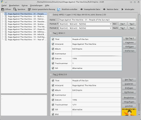
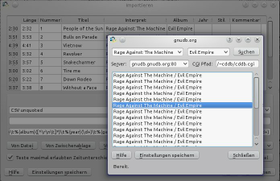

Kid3
Dieser Artikel wurde für die folgenden Ubuntu-Versionen getestet:
Ubuntu 16.04 Xenial Xerus
Ubuntu 14.04 Trusty Tahr
Zum Verständnis dieses Artikels sind folgende Seiten hilfreich:
Kid3  ist ein Programm zum Bearbeiten der Metadaten (Tags) von zahlreichen Audioformaten. Mit Kid3 ist es einfach, Tags in mehreren Dateien auf die gleichen Werte zu setzen (z.B. Album, Interpret, Jahr und Stil in allen Dateien eines Albums) oder Tags aus Dateinamen bzw. Dateinamen aus Tags zu generieren. Praktisch ist auch die Möglichkeit, bei MP3s sowohl die alten ID3v1-Tags als auch die neuen ID3v2-Tags zu setzen.
ist ein Programm zum Bearbeiten der Metadaten (Tags) von zahlreichen Audioformaten. Mit Kid3 ist es einfach, Tags in mehreren Dateien auf die gleichen Werte zu setzen (z.B. Album, Interpret, Jahr und Stil in allen Dateien eines Albums) oder Tags aus Dateinamen bzw. Dateinamen aus Tags zu generieren. Praktisch ist auch die Möglichkeit, bei MP3s sowohl die alten ID3v1-Tags als auch die neuen ID3v2-Tags zu setzen.
Funktionen:
|  |
| Kid3 |
Editieren von MP3, Ogg/Vorbis, FLAC, MPC, MP4/AAC, MP2, Speex, TrueAudio und WavPack Tags
Konvertieren zwischen ID3v1 <-> ID3v2 Tags und zwischen ID3v2.3 <-> ID3v2.4 Tags
Editieren der Tags von mehreren Dateien
Generieren der Tags aus dem Dateinamen
Generieren des Dateinamens aus den Tags
Generieren und Ändern des Verzeichnisnamens aus den Tags
Generieren von Stücklisten (Playlisten)
Einfügen von Titelbildern (Cover)
Automatische Groß-/Kleinschreibung und Zeichenersetzung (z.B. von Umlauten)
Import von gnudb.org, TrackType.org, MusicBrainz, Discogs und anderen Quellen
Export als CSV, HTML, Stückliste, Kover XML oder in anderen Formaten. Exportierte CSV-Dateien können wieder importiert werden.
Für Linux, Mac OS X und Windows verfügbar
Ähnlich viele Möglichkeiten bietet das auf GTK basierende Programm EasyTAG. Für weitere Alternativen siehe Multimedia - Verwaltung.
Installation¶
KDE¶
Folgendes Paket muss unter Kubuntu installiert [1] werden:
kid3 (universe)
 mit apturl
mit apturl
Paketliste zum Kopieren:
sudo apt-get install kid3
sudo aptitude install kid3
Andere Desktop-Umgebungen¶
Wer kein Kubuntu bzw. KDE nutzt, das Programm - ohne die komplexen KDE-Abhängigkeiten - aber trotzdem installieren möchte, der kann folgendes Paket wählen:
kid3-qt (universe)
mit apturl
Paketliste zum Kopieren:
sudo apt-get install kid3-qt
sudo aptitude install kid3-qt
Audiowiedergabe aktivieren (Ubuntu 16.04)¶
Kid3 kann Audiodateien auch abspielen, dazu müssen zusätzlich folgende Pakete installiert werden:
qml-module-qtmultimedia
pulseaudio-module-gconf
qml-module-qtgstreamer (universe)
gstreamer1.0-plugins-ugly (universe)
mit apturl
Paketliste zum Kopieren:
sudo apt-get install qml-module-qtmultimedia pulseaudio-module-gconf qml-module-qtgstreamer gstreamer1.0-plugins-ugly
sudo aptitude install qml-module-qtmultimedia pulseaudio-module-gconf qml-module-qtgstreamer gstreamer1.0-plugins-ugly
PPA¶
Die aktuellste Version kann über ein "Personal Packages Archiv" (PPA) [2] des Entwicklers installiert werden.
Adresszeile zum Hinzufügen des PPAs:
ppa:ufleisch/kid3
Hinweis!
Zusätzliche Fremdquellen können das System gefährden.
Ein PPA unterstützt nicht zwangsläufig alle Ubuntu-Versionen. Weitere Informationen sind der  PPA-Beschreibung des Eigentümers/Teams ufleisch zu entnehmen.
PPA-Beschreibung des Eigentümers/Teams ufleisch zu entnehmen.
Damit Pakete aus dem PPA genutzt werden können, müssen die Paketquellen neu eingelesen werden.
Nach dem Aktualisieren der Paketquellen erfolgt die Installation wie oben angegeben.
Bedienung¶
Nach der Installation kann Kid3 über "Multimedia -> Kid3" bzw. unter GNOME über "Anwendungen -> Unterhaltungsmedien" gestartet werden.
Öffnet man nun eine Datei über "Datei -> Öffnen", werden sämtliche unterstützte Audio-Dateien, die sich im selben Verzeichnis befinden, im linken großen Kasten angezeigt. Im Bereich "Tag 1" (ID3v1) und "Tag 2" (ID3v2) auf der rechten Seite kann man die Tags des im linken Bereich ausgewählten Titels sehen und bearbeiten. Der Name der Datei sowie Informationen über Typ und Qualität werden im Bereich "Dateiname" angezeigt.
Attribute für mehrere Dateien¶
Damit man bei mehreren Titeln z.B. den Albumnamen nicht jedesmal einzeln eintragen muss, kann man dies für alle Titel auf einmal erledigen. Hierfür einfach entweder mit
Strg +
A alle Stücke oder mit
Strg + linker Maustaste  einzelne Stücke auswählen. Wenn man nun bei einem Titel einen Eintrag macht und links davon das Häkchen setzt, so wird dieser Eintrag automatisch für alle anderen ausgewählten Titel übernommen.
einzelne Stücke auswählen. Wenn man nun bei einem Titel einen Eintrag macht und links davon das Häkchen setzt, so wird dieser Eintrag automatisch für alle anderen ausgewählten Titel übernommen.
|  |
| Metadaten importieren |
Gesamte Alben automatisch bearbeiten¶
Kid3 kann ein gesamtes Album in einem Rutsch mit Metadaten versehen. Dazu öffnet man "Datei -> Importieren". Wählt man bei "Von Server" einen der Albumtitellisten-Server, öffnet sich eine Suchmaske, mit deren Hilfe man den Server nach dem gewünschten Album durchsuchen kann. Ist das Album keine Rarität, sollten verschiedene passende Einträge gefunden werden. Die Treffer kann man sich nun ansehen und über "Ok" den passendsten Treffer als Tag für das Album übernehmen. Hierbei werden für alle Titel die Angaben für Künstler, Komponist, Album, Titel, Titelnummer sowie Jahr übernommen.
Cover-Bilder¶
Hinweis:
In neueren Versionen können Cover-Bilder auch bequem via "Drag-and-Drop" eingefügt werden. Weitere Informationen finden sich im Handbuch (siehe Links).
Das ID3v2-Format ermöglicht auch das Einbinden von Bildern in MP3s. Dazu muss man im Feld "Tag 2" das Element "APIC - Dazugehöriges Bild" (in neueren Versionen "Bild") hinzufügen und anschließend bearbeiten. Hier werden folgende Angaben benötigt:
Textkodierung (z.B.
ISO-8859-1)Bildformat (optional, z.B.
JPG)MIME-Typ (z.B.
image/jpeg)Bildtyp (z.B. "Cover (Vorderseite)")
Beschreibung (optional, z.B. Dateiname des Bildes)
Nun kann über "Importieren" eine JPG-Datei ausgewählt werden. Ein vorhandenes Cover-Bild lässt sich über die Schaltfläche "Ansicht" betrachten. Prinzipiell sollten kleine Bilder (z.B. 240x240 Pixel) bevorzugt werden, um die Dateigröße nicht unnötig aufzublähen. Statt selbst im Internet ein passenden Bild zu suchen, kann beim Dateinamen auch das Kontextmenü ( ) benutzt werden. Der verwendete Browser und die URLs für die Suche können in den Einstellungen unter "Benutzerbefehle" konfiguriert werden.
) benutzt werden. Der verwendete Browser und die URLs für die Suche können in den Einstellungen unter "Benutzerbefehle" konfiguriert werden.
Konfiguration¶
Über "Einstellungen -> Kid3 einrichten" gelangt man zu den Optionen. Will man MP3s auf einem externen MP3-Player abspielen, so empfiehlt es sich, im Reiter "Tag" bei "Version für neue Tags" die Option "ID3v2.3.0" auszuwählen. Hintergrund ist die mangelnde Kompatibilität vieler Abspielgeräte (und mancher Abspielprogramme), die die neueste Version ID3v2.4.0 nicht unterstützen.
Auch die Text-Codierung für ID3v1 (Standard: ISO-8859-1) kann man in diesem Reiter einstellen, falls sich ein Gerät einen bestimmten Zeichensatz nicht richtig anzeigt. Empfehlenswert für ID3v2 ist der Unicode-Zeichensatz UTF-16, welcher von ID3v1 nicht unterstützt wird.

 Programmübersicht
Programmübersicht- Erstellt mit Inyoka
-
 2004 – 2017 ubuntuusers.de • Einige Rechte vorbehalten
2004 – 2017 ubuntuusers.de • Einige Rechte vorbehalten
Lizenz • Kontakt • Datenschutz • Impressum • Serverstatus -
Serverhousing gespendet von